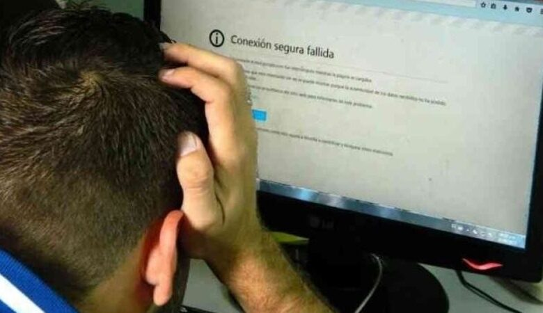

RETOS A DISTANCIA

El modelo de educación a distancia ha ido cobrando importancia en los centros educativos desde hace años, esto se debe a que es una forma de enseñanza donde los alumnos y profesores no tienen que estar físicamente en el aula. Si bien este tipo de estudio ganó importancia primero en la educación superior, poco después las instituciones comenzaron a verlo como una forma de conectar a sus estudiantes con sus instituciones en un país diferente al país de residencia sin desmerecer el valor curricular. Además del contexto actual provocado por la pandemia del COVID-19, la incorporación de este método de enseñanza a las instituciones educativas, directivos, docentes y estudiantes enfrentan los desafíos del sistema educativo y las tecnologías que se han planteado para el futuro.
La educación a distancia se basa en el principio de que tanto los estudiantes como los profesores no necesitan estar en el mismo espacio físico, el proceso de aprendizaje se lleva a cabo a través de un sistema de aprendizaje en línea o una plataforma de aprendizaje electrónico. La educación online es una nueva forma de consumir contenidos dinámicos, innovadores e interactivos así como un nuevo modelo de aprendizaje que ofrece grandes beneficios y ventajas como flexibilidad de tiempo y espacio, economía. Algunos ejemplos son:
- Resistencia al cambio: Todo cambio o crisis implica nuevos aprendizajes, sin embargo, si las instituciones se resisten a incorporar herramientas que mejoren la experiencia de la educación a distancia, se perderán los beneficios de la tecnología y su proceso de enseñanza quedará rezagado con respecto a los centros educativos. 
- Flexibilidad en contenidos y metodologías: Si bien la adopción de herramientas para la educación a distancia muestra que es hora de cambiar el proceso de enseñanza, las instituciones aún deben definir claramente cómo hacerlo de acuerdo con las necesidades de sus comunidades académicas. Esto significa no subir material de un aula presencial a un aula virtual, sino contenidos y modelos educativos que deben desarrollarse para adaptarse al mundo online.
- Fortalecer el seguimiento a cada estudiante: Los centros educativos deben entender que las plataformas digitales ofrecen diferentes formas para que los estudiantes analicen la información y/o el contenido, así como para estudiar la usabilidad y los patrones de comportamiento de uso, con el fin de tomar decisiones adecuadas en cuanto a la formación, identificando fortalezas y oportunidades de mejora en un manera más rápida.